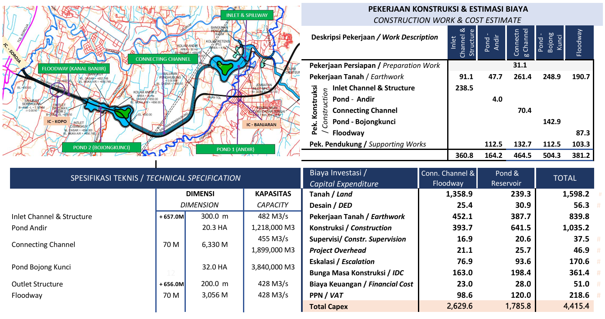
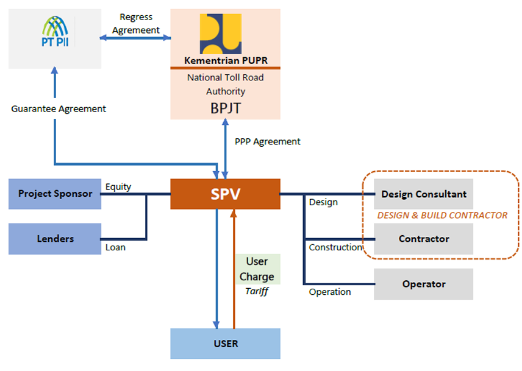

Penyediaan, pembiayaan dan penyelenggaraan infrastruktur publik
adalah kewajiban dan kewenangan pemerintah. Dalam perkembangannya
penyediaan/pengadaan infrastruktur ini dapat dikerjasamakan dengan
swasta sebagaimana diatur dalam Peraturan Presiden no.38 tahun
2015 tentang Kerjasama Pemerintah dengan Badan Usaha dalam
Penyediaan Infrastruktur. Peraturan Presiden dan aturan dibawahnya
menjelaskan tentang proses penyediaan, pembiayaan dan pengelolaan
infrastruktur yang dapat dikerjasamakan.
Alur proses struktur pembiayaan infrastruktur dapat dijelaskan
dalam diagram berikut :
Ada 2 skema prakarsa proyek KPBU:
- Solicited - diprakarsai oleh pemerintah
-
Unsolicited - diprakarsai oleh sektor swasta / Badan Usaha
Proyek Prasarana Pengendali Banjir (PPBBS) dan Jalan Tol Lingkar
Selatan Bandung (JTLSB) adalah proyek yang dikategorikan sebagai
proyek Kerjasama Penerintah dengan Badan Usaha (KPBU), yang
diusulkan Badan Usaha - unsolicited , dengan metoda pengembalian
investasi sebagai:
I. PPBBS: Prasarana Pengendali Banjir Bandung Selatan
1. Deskripsi Proyek
Prasarana Pengendali Banjir Bandung Selatan - diusulkan untuk
melengkapi dan menjadi bagian dari Program Pengendalian Banjir DAS
Citarum Hulu (UCBFM), sebagai respons atas perubahan iklim dan
tata guna lahan - yang mengakibatkan pergeseran puncak banjir.
Perencanaan prasarana yang semula didasarkan atas debit banjir Q20
menjadi Q50

2. Analisis Kelayakan Keuangan
3. Struktur Project
Penggambaran pemangku kepentingan proyek dan hubungan diantara
mereka:
PJPK adalah Menteri PUPR sebagai penyedia atau
penyelenggara Infrastruktur berdasarkan peraturan
perundang-undangan
Badan Usaha Pelaksana : perseroan terbatas yang
didirikan oleh Badan Usaha pemenang lelang atau yang telah
ditunjuk secara langsung
PT. PII : Badan usaha yang didirikan oleh
pemerintah dan diberikan tugas khusus untuk melaksanakan
penjaminan Infrastruktur sesuai dengan peraturan perundang
undangan
Sponsor pihak yang membiayai proyek KPBU dalam
bentuk penyertaan Ekuitas di BUP
Lender : pihak yang membiayai proyek KPBU dalam
bentuk Pinjaman kepada BUP.
Design & Build Contractor : Pihak yang ditunjuk
oleh oleh BUP untuk melaksanakan pekerjaan rancangbangun.
Operator : pihak yang ditunjuk oleh BUP untuk
melaksanakan pengoperasian dan pemeliharaan infrastruktur
4. Jadwal Proyek
II. JTLSB: Jalan Tol Lingkar Selatan Bandung
1. Deskripsi Proyek
Jalan Tol Lingkar Selatan Bandung - merupakan bagian jaringan
jalan tol lingkar luar Bandung Raya, menghubungkan jalan tol
Pasteur dan jalan tol Bandung Cilacap, membentang melintasi
kabupaten Bandung Barat, dan Bandung. Sebagian trase jalan tol ini
sejajar saluran Pengendali Banjir Bandung Selatan
2. Analisis Kelayakan Keuangan
3. Struktur Project
Penggambaran pemangku kepentingan proyek dan hubungan diantara
mereka:
PJPK adalah Menteri PUPR sebagai penyedia atau
penyelenggara Infrastruktur berdasarkan peraturan
perundang-undangan

Badan Usaha Jalan Tol : perseroan terbatas yang
didirikan oleh Badan Usaha pemenang lelang atau yang telah
ditunjuk secara langsung
PT. PII : Badan usaha yang didirikan oleh
pemerintah dan diberikan tugas khusus untuk melaksanakan
penjaminan Infrastruktur sesuai dengan peraturan perundang
undangan
Sponsor pihak yang membiayai proyek KPBU dalam
bentuk penyertaan Ekuitas di BUP
Lender : pihak yang membiayai proyek KPBU dalam
bentuk Pinjaman kepada BUJT.
Design & Build Contractor : Pihak yang ditunjuk
oleh oleh BUJT untuk melaksanakan pekerjaan rancangbangun.
Operator : pihak yang ditunjuk oleh BUJT untuk
melaksanakan pengoperasian dan pemeliharaan infrastruktur
4. Jadwal Proyek